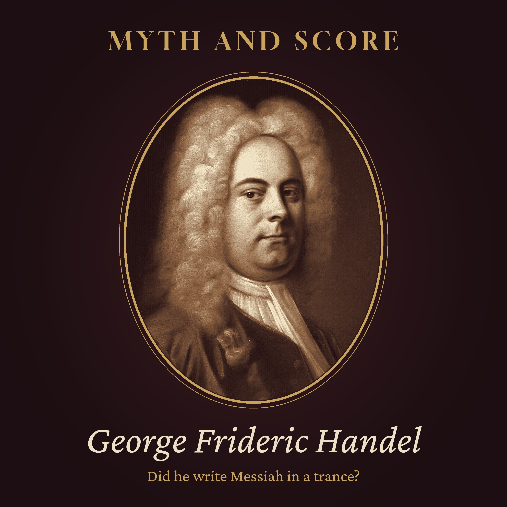

Myth and Score · Episode 5 · 41 min
Did Handel Write Messiah in a Trance?
Did Handel really write Messiah in a trance, weeping, with "all Heaven" before his eyes? And did King George the Second stand for the Hallelujah chorus? Tonight we hold both stories up to the documents. The speed is real: Handel's own dates in the score show twenty-four days, from 22 August to 14 September 1741. But the vision of Heaven first appears in print eighty years later, and four famous choruses began as Italian love duets he had written that same summer. We follow Messiah from Charles Jennens' libretto to a charity concert in Fishamble Street, Dublin, where ladies were asked to leave their hoops at home; to a doubtful London; to the orphans of the Foundling Hospital; and to Handel's last spring, blind, in Brook Street. Inside: a fast man and a slow legend, a disappointed librettist, and a king who may not have been there. Read by a synthetic voice; script written and fact-checked by the show's team. Chapters: The story everyone knows · The boy from Halle · A bad year in London · The man at Gopsall · Twenty-four days · All Heaven before me · Old music, new words · A fast man · The road to Dublin · Fishamble Street · London is not so sure · The king who stood up · The children of the Foundling Hospital · Darkness · The storytellers · The verdict · Listening again Episode picture: George Frideric Handel by Balthasar Denner, about 1727, public domain (Wikimedia Commons). Read by a synthetic voice; script written and fact-checked by the show's team.
The script
In the late summer of 1741, in a house in Brook Street in London, a composer of fifty-six began a new score on the twenty-second of August, and wrote the last of it on the fourteenth of September.
Between those two dates lie twenty-four days, and the music he wrote in them was Messiah. Ever since, people have wanted those twenty-four days to be a miracle.
Myth and Score. Episode five... Did Handel write Messiah in a trance?
This episode is read by a synthetic voice. If these stories keep you company, follow the show... it helps others find it.
On this show, we take the most famous stories about great composers and hold them up to the light. Some turn out to be true. Some are half true. And some are true in one part, and pure legend in the next.
Tonight's story is one of those. It is told every December, in concert programmes and church newsletters, on radio and in school assemblies. A composer, old and nearly ruined, shuts himself away, forgets to eat, and writes a masterpiece in a few weeks, in tears, as if the music were being dictated to him from above. And when it is first played in London, the king himself rises to his feet.
To test it, we will walk through a town in Saxony in the 1680s, through a London where Italian opera was going out of fashion, to a country house in Leicestershire, a music hall in a narrow Dublin street, a theatre in Covent Garden, a hospital for abandoned children, and finally a darkened room in Brook Street in the spring of 1759.
Chapter one. The story everyone knows.
Let us begin with the story as most people hear it.
In this version, Handel is at the lowest point of his life. His operas have failed. His money is gone. His health is broken. He is close to being thrown into prison for debt. Then a friend sends him a collection of words from the Bible, and something happens to him.
He locks himself in his room. For three weeks, he hardly leaves it. His servant brings him food, and finds it untouched, hours later. And one day, the servant comes in and finds his master at the table, with tears running down his face. Handel looks up, and says that he did think he did see all Heaven before him, and the great God himself.
The score is finished in twenty-four days. The servant, in some versions, hears his master weeping over the Hallelujah chorus. It is as if Handel were not composing at all... only writing down what he was given.
It is a beautiful story. And one part of it is true. The twenty-four days are real. They are written, in Handel's own hand, on the pages of the score.
The rest needs looking at more carefully.
Chapter two. The boy from Halle.
He was not born Handel. He was born Georg Friedrich Händel, on the twenty-third of February, 1685, in Halle, a town on the river Saale, in Saxony. That same year, about eighty miles away, Johann Sebastian Bach was born in Eisenach. The two men never met.
His father was a barber-surgeon, already in his sixties when the boy was born, a practical man who wanted his son to study law. The story goes that the boy smuggled a small keyboard into the attic, and practised at night. That one, too, comes from a later biography, and we cannot check it. What we can check is that by his teens, he was the organist of a church in Halle, and that he soon left for Hamburg, where he played the violin in the opera orchestra and wrote his first operas.
Then he went to Italy, the land of opera. For more than three years, he lived in Florence, in Rome, in Venice and in Naples. He met the great Italian composers, learned to write for the finest singers in the world, and wrote dozens of cantatas for Italian voices.
Remember those Italian years. They will come back to us later, in a way that might surprise you.
In 1710, he took a post at the court of Hanover. And almost at once, he asked for leave to visit London. He went, and his opera Rinaldo was a sensation. He went back to Hanover, and then he came to London again... and this time, he stayed. In 1714, his employer in Hanover became King George the First of Great Britain, and followed him there.
In 1727, Handel became a British subject. He spent the rest of his life in London. And the English, who found umlauts difficult, called him Handel.
Chapter three. A bad year in London.
For nearly thirty years, Handel's great business in London was Italian opera.
He wrote it, he directed it, and for long stretches he ran the companies that put it on. He hired famous Italian singers, at enormous fees, and London's fashionable world came to hear them. At his best, he was the most successful opera composer in Europe.
But Italian opera in London was always a fragile thing. It was sung in a language most of the audience did not understand. It was expensive. And in the 1730s, a rival company was set up against him, and the two companies drained each other of money and of audiences.
In 1737, Handel fell seriously ill. His right hand was paralysed for a time, and his mind, some said, was disturbed. He went to the spa at Aachen to take the hot baths, and to everyone's surprise, he recovered.
But the opera business did not. In the winter of 1740 to 1741, Handel's last two operas were given at a small theatre in Lincoln's Inn Fields, and they did not do well. The second, Deidamia, had only three performances, in the early weeks of 1741. It was the last opera he would ever write.
So there is truth in the picture of a difficult year. Handel was tired, his opera seasons had lost money, and he was talking about leaving London for a while.
But was he ruined, and close to a debtors' prison? There is no good evidence of that. He kept his house. He kept his servants. A few months later, he could afford to travel to Ireland and spend most of a year there. He had been through hard seasons before, and he would recover from this one too.
Chapter four. The man at Gopsall.
In Leicestershire, in the English Midlands, there was a great country house called Gopsall Hall. Its owner was Charles Jennens... a wealthy, learned, rather prickly gentleman, devoted to music, to Shakespeare, and to the Church of England.
Jennens had already written words for Handel. In 1738, he had written the libretto of Saul, an oratorio... a drama on a sacred subject, sung in English, in a theatre, but without costumes or scenery.
And in the summer of 1741, Jennens had something new.
On the tenth of July, he wrote to a friend, a scholar named Edward Holdsworth. Handel, he said, was saying he would do nothing next winter. But Jennens hoped he could persuade him to set another collection of Scripture that he had made for him. And then he named it. The subject, he wrote, is Messiah.
This was an unusual libretto. There are no characters in it. No one sings as Saul, or as David. Instead, Jennens took verses from the Bible... from the prophets, the Psalms, the Gospels, and the letters of Saint Paul... and arranged them in three parts. The first tells of the prophecies and the birth of Christ. The second, of his suffering, death and resurrection. The third, of the redemption of the world.
It was not a story so much as a meditation. And almost every word came from the English Bible, and from the Psalms of the Book of Common Prayer.
Jennens believed that this was his best work. And he hoped that Handel would take his time over it.
Chapter five. Twenty-four days.
Handel did not take his time.
At the head of the first page of his score, he wrote the date he began... the twenty-second of August, 1741. And as he went, he noted the dates in the score, as he often did.
The first part was finished in outline by the twenty-eighth of August. Six days.
The second part, with the Passion music and the Hallelujah chorus at its end, by the sixth of September. Nine days more.
The third part, by the twelfth of September. And at the end, he wrote that the oratorio was finished... and then that it was filled up, on the fourteenth.
That phrase, filled up, is the key to how he worked. Handel first wrote the music in outline... the voices, the bass line, and the most important parts for the violins. Then, in a second pass, he went back and filled in the rest of the orchestra. In Messiah, that filling up took two days.
At the very end of the score, he added three letters... S. D. G. Soli Deo Gloria. To God alone the glory.
Some have taken those letters as a sign of something special. But Handel was a believing Lutheran, and it was an old custom of German church musicians to sign their work this way. Bach did it all the time.
So, twenty-four days. Two hundred and fifty or so pages of manuscript. About two hours of music, depending on how it is performed.
That is extraordinary by anyone's standard. And it is not a legend. The manuscript survives, in the British Library in London, and anyone who looks at it can see the dates in Handel's hand.
But speed is not the same thing as a trance. And for the trance, we need a different kind of evidence.
Chapter six. All Heaven before me.
Where does the famous scene come from... the servant, the untouched food, the tears, the words about seeing all Heaven?
Not from Handel. In none of his surviving letters does he say anything of the kind. Not from Jennens, who was not there. Not from any friend who wrote about Handel in his lifetime, or soon after his death.
The first full biography of Handel appeared in 1760, the year after he died. It was written by a young clergyman, John Mainwaring, with the help of people who had known the composer. It tells us a good deal about his life. It does not tell us this story.
The words that are always quoted appear much later. They can be traced to a book of anecdotes and memoirs published in 1822 by Laetitia Matilda Hawkins, the daughter of the music historian Sir John Hawkins, who had known Handel. And they were spread further in 1852, in a book about Handel's visit to Dublin by an Irish clergyman, Horatio Townsend.
That is more than eighty years after Messiah was written. The person who is supposed to have heard the words, a servant, is never named. And the words themselves change from one telling to the next. In some versions, Handel sees all Heaven and the great God himself. In others, he adds that he thinks God has visited him.
None of that makes it impossible that Handel was moved while he wrote. People are often moved by their own work. But the scene as we know it... the locked room, the trance, the dictation from above... has no witness we can question, and no document from the time.
And there is one more thing that sits awkwardly with the trance. If the music was dictated to him, why did so much of it already exist?
Chapter seven. Old music, new words.
In the early summer of 1741, only a few weeks before he began Messiah, Handel wrote some Italian chamber duets. These were small pieces, for two voices and a keyboard, of the kind he had written in his years in Italy... elegant, light, about love and flowers and faithless lovers.
One of them was called Quel fior che all'alba ride. That flower that smiles at dawn. Another was called Nò, di voi non vo' fidarmi. No, I will not trust you.
If you know Messiah well, and you hear these duets for the first time, something strange happens. The tunes are familiar.
The opening of Nò, di voi non vo' fidarmi became the chorus For unto us a child is born. Its last part became All we like sheep have gone astray. And from Quel fior che all'alba ride came the choruses His yoke is easy, and And he shall purify.
Four of the best-known choruses in Messiah began life as Italian love duets, written a few weeks earlier, with quite different words.
Some listeners can hear it, once they know. In For unto us a child is born, there are long, rippling runs on the word "born"... runs that fit rather oddly on an English word, and much more naturally on the Italian they were made for.
To us, this can sound like cheating. To Handel, and to his audiences, it was ordinary practice. Composers of his time reused their own music all the time, and the music of other people too. A good idea was too valuable to use only once. And turning a light duet into a mighty chorus, for full choir and orchestra, is itself an act of great skill.
But it does tell us something. A good part of Messiah was not received from Heaven in August 1741. It was already lying on Handel's desk, from June and July.
Chapter eight. A fast man.
There is another way to test the miracle. We can ask whether twenty-four days was unusual for Handel.
And the answer is that it was fast, even for him... but not out of character.
Within days of finishing Messiah, he began another oratorio, Samson, on words taken from the poet John Milton. By the end of October 1741, about six weeks later, he had a complete draft of that too. That is two great oratorios in around ten weeks.
A few years earlier, in the autumn of 1738, he had written the oratorio Israel in Egypt in about a month. And when Rinaldo was being prepared in London in 1711, it was said that he wrote the music in about a fortnight... though that claim comes from the opera's librettist, and he may have been showing off.
Handel was a working theatre composer. For decades, he had produced operas to deadlines, for singers who were waiting, for theatres that had to open. He had a habit of working at great speed, with a vast store of music in his memory, and a well-practised way of writing first in outline and filling in later.
None of this makes Messiah less remarkable. But it makes the speed easier to understand. It was not a man possessed. It was a master craftsman, at the height of his powers, doing what he had trained himself to do for forty years.
And then, there is the matter of the revisions. If the score had been dictated, we might expect Handel to leave it alone. He did not. For the rest of his life, he kept changing it... rewriting arias for new singers, moving them from one voice to another, cutting, adding, recomposing. There is no single, final version of Messiah. There are many, and they are all Handel's.
Chapter nine. The road to Dublin.
Messiah was finished in September 1741. And then Handel took it, not to a London theatre, but across the sea, to Ireland.
Why Dublin? Partly because he had been invited. Dublin was then the second city of the British Isles, with a lively musical life, and its charitable societies often raised money through concerts. Some writers think the invitation came from the Lord Lieutenant of Ireland, the Duke of Devonshire. Others point to the governors of Dublin's charities. The documents do not settle it.
And partly, perhaps, because London had grown cold to him for a while.
Handel arrived in Dublin on the eighteenth of November, 1741. He took lodgings in Abbey Street, and announced a series of subscription concerts in a new music hall in Fishamble Street, a narrow street running down to the river Liffey.
The concerts were a great success. On the twenty-ninth of December, he wrote to Jennens, delighted, describing the full hall and the good taste of the Irish nobility. A second series followed.
And all this time, Messiah was waiting.
It was not given to a paying public until the spring. And when it came, it was for charity.
Chapter ten. Fishamble Street.
The newspapers of Dublin announced it in advance. A new grand sacred oratorio, by Mr Handel, would be performed for the relief of the prisoners in the city's jails, for Mercer's Hospital, and for the Charitable Infirmary.
There was a public rehearsal on the ninth of April. It was so well received that the organisers expected a crowd for the performance itself. And so, a few days before it, a notice appeared in the newspapers with a most practical request.
The ladies were asked not to wear hoops in their skirts. The gentlemen were asked to come without their swords.
Hoops, in the fashion of the time, made a lady's skirt very wide. Without them, more people could fit into the room. And more people meant more money for the charities.
The performance took place on Tuesday, the thirteenth of April, 1742, at midday. The singers of the two Dublin cathedrals, Christ Church and Saint Patrick's, sang in the choir. The soloists included an Italian soprano, Signora Avoglio, and the English actress and singer Susannah Cibber.
Mrs Cibber was a famous tragic actress, with a voice that was not large, but was said to go straight to the heart. She had come to Dublin partly to escape a scandal in London... a bitter, public case about her marriage. When she sang the aria He was despised, a clergyman in the audience, Patrick Delany, is said to have risen and cried out that for this, all her sins should be forgiven her. That story too comes to us from later tellers, and we cannot be sure of the words.
What we can be sure of is the newspaper. A few days later, the Dublin Journal wrote that words could not express the delight the work gave to the admiring crowd. It reported about seven hundred people in the room, and about four hundred pounds raised, to be shared among the three charities. Later accounts say that the money freed one hundred and forty-two people from the debtors' prison.
Messiah's first performance was not in a church, and not in a palace. It was in a concert hall, in a narrow street, to pay the debts of strangers.
Chapter eleven. London is not so sure.
Handel came back to London in the late summer of 1742. And in the spring of 1743, he brought Messiah to the theatre at Covent Garden.
London did not fall at its feet.
The first London performance was on the twenty-third of March, 1743. On the posters, it was not even called Messiah. It was announced only as a new sacred oratorio. There were three performances that season, and then it was put away.
Why the caution? Because Messiah touched a nerve. Many devout people in London were uneasy about words from the Bible being sung in a playhouse, by actors and actresses, for an audience who had paid for their tickets. A few days before the premiere, a letter in a London paper, signed with a pen name, asked whether a theatre was a fit place for such a thing, and whether the players were fit to perform it.
Some of the clergy agreed. And Mrs Cibber, the same singer who had moved Dublin, was hardly a figure of respectability in London's eyes.
Jennens was unhappy too, but for a different reason. He thought Handel had not done justice to his words. In a letter to Holdsworth, he complained that Handel had made a fine entertainment of it, but not nearly so good as he might and ought to have done. He even wrote that it had been set in great haste... though Handel had told him he would be a year about it, and make it the best of all his works.
Think about that for a moment. The man who wrote the words was the one person who was disappointed by the speed.
For several years, Messiah stayed a work that Handel brought out now and then, and that London received politely. Its great fame was still ahead of it. And it would come from an unexpected place.
Chapter twelve. The king who stood up.
But first, the second legend.
Every year, all over the English-speaking world, when the orchestra begins the Hallelujah chorus, the audience gets to its feet. And everyone knows why. At the first London performance, King George the Second was so moved that he rose... and since no one may sit while the king stands, the whole audience rose with him.
It is a lovely tradition. Is the story true?
There is no account from the time that says so. No newspaper of 1743 mentions the king at a performance of Messiah. No letter from that spring describes him standing. In fact, there is no clear evidence from the time that he attended that first London performance at all.
The story appears in writing for the first time in 1780... thirty-seven years later. It comes in a letter by the Scottish poet and philosopher James Beattie, passing on what he had been told. When Messiah was first performed, he wrote, the audience was so carried away at the Hallelujah chorus that they all stood up, together with the king, who happened to be present, and stayed standing until the chorus ended.
That is all. It is second-hand, from decades later. And Beattie says the king happened to be there... not that he started anything.
Historians have offered other explanations, half in fun. Perhaps the king was hard of hearing, and stood because he thought it was the national anthem. Perhaps he simply needed to stretch his legs. There is no evidence for these either.
There is one small clue that is worth having. In 1750, a gentleman named George Harris went to a performance of Messiah, and noted that at some of the choruses the company stood up. So the custom of standing may be old... and may not have begun with one chorus, or with one king.
If you stand this Christmas, you are joining a very old tradition. But it is probably not the king's.
Chapter thirteen. The children of the Foundling Hospital.
In 1739, a retired sea captain named Thomas Coram opened a home in London for babies abandoned by their mothers. It was called the Foundling Hospital. In a city where many such children died in the streets, it was a place of rescue, and London's artists rallied to it. The painter William Hogarth was one of its governors. So, in time, was Handel.
In May 1749, Handel gave a concert to raise money to finish the hospital's chapel.
And on the first of May, 1750, in that chapel, he conducted Messiah for the children's benefit.
It was a turning point. So many people came that many were turned away, and the performance was repeated two weeks later. Here, in a hospital chapel, given for charity, Messiah lost its air of scandal. No one could object to sacred words sung for abandoned children.
From then on, Handel conducted Messiah for the Foundling Hospital every spring. After his death, the performances went on for many years. They raised thousands of pounds for the hospital. And in his will, Handel left the hospital a fair copy of the score and the parts of Messiah, so that the performances could continue.
Do you see the shape of it? In Dublin, it began by freeing prisoners. In London, it found its fame by feeding orphans. The work that was supposed to have come down from Heaven made its way in the world through charity, one concert at a time.
Chapter fourteen. Darkness.
In the winter of 1751, Handel was writing his oratorio Jephtha. He was sixty-five.
Partway through, in the middle of a chorus whose words begin "How dark, O Lord, are thy decrees", he stopped. And in the margin of the score, in German, he wrote a note. He had got this far, he wrote, on the thirteenth of February, 1751, and could not go on, because the sight of his left eye had grown so weak.
He finished Jephtha later that year, slowly. But his sight went on failing. He was treated by surgeons, more than once. One of them, it seems, was the travelling oculist John Taylor, who had operated on Johann Sebastian Bach a few years before, with terrible results. Whatever was done to Handel's eyes did not help. By the last years of his life, he was almost entirely blind.
He did not stop working. He went on directing his oratorios, playing the organ in the intervals from memory, and improvising. His pupil and assistant, John Christopher Smith the younger, helped him with the writing.
And every spring, there was Messiah.
On the sixth of April, 1759, Handel attended a performance of Messiah at Covent Garden. It was his last. He was taken ill soon afterwards, and he went home to Brook Street, to the house where he had written it eighteen years before.
He died there, on the fourteenth of April, 1759, eight days after he had heard Messiah for the last time. He was seventy-four.
He was buried in Westminster Abbey. Thousands of people came. And when his monument was raised there, the sculptor showed him with the score of Messiah in front of him, open at the aria I know that my Redeemer liveth.
Chapter fifteen. The storytellers.
So if the trance was not documented, how did it become the story everyone knows?
Partly, it grew with the work. After Handel's death, Messiah became something larger than a piece of music. In 1784, a great commemoration of Handel was held in Westminster Abbey, with hundreds of performers. Through the nineteenth century, huge choral societies gave it with choirs of thousands. It became part of Christmas, and part of the religious life of whole countries.
A work that big seemed to need an origin to match. A composer who simply wrote quickly, borrowed from his own duets, and then revised for years, did not seem grand enough.
And so the anecdotes gathered. The tears and the vision of Heaven were set down in 1822, and spread in 1852. The untouched trays of food were added. In 1927, the Austrian writer Stefan Zweig wrote a short, dramatic story about the night Messiah was born, in his book of great moments of history, Sternstunden der Menschheit. In it, a broken Handel is brought back to life by the words of the libretto, and the music pours out of him. Zweig was a novelist, writing a story, not a history. But his version was read by many people, in many languages.
There is a deeper reason, too. We want great art to be a gift. It is comforting to think that a masterpiece arrives whole, from somewhere beyond the person who wrote it.
The documents tell a different and, perhaps, more human story. A tired man of fifty-six, with a store of music and a lifetime of craft, sat down with a remarkable libretto and worked very, very hard.
Chapter sixteen. The verdict.
So what is left, when we hold the myth up to the light?
The speed is true. Handel began Messiah on the twenty-second of August, 1741, and finished it on the fourteenth of September. We know it because he wrote the dates in the score himself, and the score survives.
The difficult year is partly true. His opera seasons had failed, and he had written his last opera. But there is no good evidence that he was ruined, or facing prison.
The trance is legend. The tears, the servant, the vision of all Heaven... none of it is reported by anyone who was there, and the famous words first appear in print about eighty years later. Handel may well have been moved as he wrote. We simply do not know. And much of what makes the speed possible is visible in the documents... a lifetime of writing to deadlines, a method of outline and filling up, and several choruses adapted from Italian duets he had written that summer.
And the king standing at the Hallelujah chorus is legend too. It first appears in a second-hand letter written thirty-seven years later, and there is no evidence from 1743 that the king was even in the theatre.
So, did Handel write Messiah in a trance?
The answer of the evidence is no. He wrote it in twenty-four days, which is astonishing. But he wrote it awake, at his desk, as a craftsman, using everything he knew.
Chapter seventeen. Listening again.
There is one more thing worth saying.
The myth of the trance, for all its beauty, takes something away from Handel. If the music was dictated, then the man who wrote it was only a scribe. His Italian years, his forty years in the theatre, his knowledge of how a chorus can build, and how a single voice can break a room's heart... all of that disappears.
The documents give it back to him.
Listen again, sometime, to For unto us a child is born, and hear a love duet from the summer of 1741, rebuilt into a shout of joy. Listen to He was despised, and think of Mrs Cibber in the hall in Fishamble Street. Listen to the Hallelujah chorus, and know that it was written in the second week of that work, by a man who would go on, a fortnight later, to write Samson.
Messiah was not a miracle that happened to Handel. It was something Handel did.
And it has gone on doing good in the world ever since... freeing prisoners, feeding orphans, and bringing strangers together in a room, once a year, to listen.
This has been Myth and Score. The sources for tonight's episode are in the notes.
Twenty-four days in Brook Street... and the music is still being sung, every winter, everywhere.
Also from the late hours: Embers of History · Slow Orbit · The Quiet Armoury